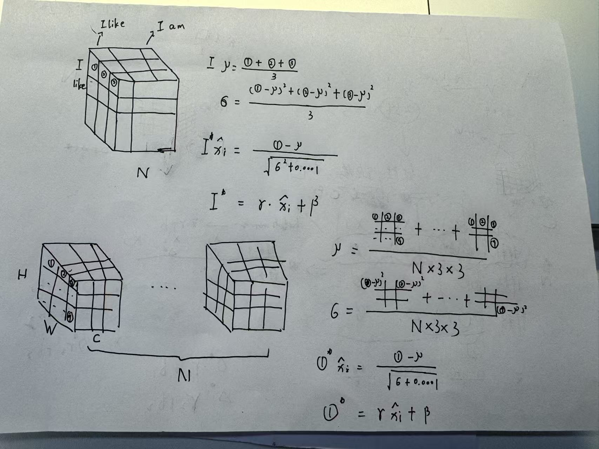

王特起
2017.4.1
视觉理论笔记⚓︎
分类问题⚓︎
逻辑斯蒂回归⚓︎
给定==两个特征==\(x_{1}\)和\(x_{2}\)，该模型将拟合==线性回归==，使其输出为logit(z)，使用==Sigmoid函数==将其转换为==概率==。 $$ P\left( y=1 \right) =\sigma \left( z \right) =\sigma (b+w_{1}x_{1}+w_{2}x_{2}) $$
-
对数比值比函数
将==概率==映射到==对数比值比==，且对称。logit值就是对数比值比。
-
Sigmoid函数
将==对数比值比==映射回==概率==
-
决策边界
z等于0，就处于==决策边界==
二元交叉熵损失⚓︎
-
误差
预测==接近1的概率==，当概率为1意味着==0损失==
- \(\text{正类误差}_{i}=\text{log}(P(y_{i}=1))\)
- \(\text{负类误差}_{i}=\text{log}(1-P(y_{i}=1))\)
-
损失 $$ \text{BCE} \left( y \right) =-\frac{1}{N_{\text{正}}+N_{\text{负}}} \left[ \sum_{i=1}^{N_{\text{正}}} \text{log} \left( P\left( y_{i}=1 \right) \right) +\sum_{i=1}^{N_{\text{负}}} \text{log} \left( 1-P\left( y_{i}=1 \right) \right) \right] $$ 等价形式 $$ \text{BCE} \left( y \right) =-\frac{1}{N} \sum_{i=1}^{N} \left[ y_{i}\text{log} \left( P\left( y_{i}=1 \right) \right) +\left( 1-y_{i} \right) \text{log} \left( 1-P\left( y_{i}=1 \right) \right) \right] $$
-
损失函数类
-
nn.BCEWithLogitsLoss最后一层==没有==Sigmoid层
-
损失函数要确保==第一个参数是预测值==
-
输入是==logit==，标签是==浮点数==
-
分类阈值⚓︎
TODO
交叉熵损失⚓︎
-
sofmax函数计算概率 $$ \text{softmax} \left( z_{i} \right) =\frac{e{z_{i}}}{\sum\nolimits_{j} $$} e^{z_{j}}
-
损失 $$ \text{CE} \left( y \right) =-\frac{1}{N_{0}+\cdots +N_{C-1}} \sum_{c=0}^{C-1} \sum_{i=1}^{N_{c}} \text{log} \left( P\left( y_{i}=c \right) \right) $$
-
损失函数类
-
nn.CrossEntropyloss()最后一层==没有==LogSoftmax层
-
输入是==logit==，标签是==长整形==
-
评价指标⚓︎
-
准确率
正确预测的数量和该类数据点的数量
激活函数⚓︎
仿射变化：线性变换\(w^{T}x\)+平移\(b\)，神经元==只能==进行仿射变化
决策边界：在==激活==特征空间的一条==直线==，在==原始==特征空间是一条==曲线==
激活函数是==非线性函数==，扭曲和转动==特征空间得到==激活特征空间，打破深层和浅层模型的==等价性==。
- Sigmoid激活函数
- TanH激活函数
- ReLU激活函数
卷积神经网络⚓︎
卷积⚓︎
-
使用
nn.Conv2d()定义卷积层in_chanels定义输入通道数out_chanels定义输出通道数kernel_size定义卷积核大小stride定义步幅padding定义填充大小
-
卷积后的形状 $$ \left( \frac{\left( h+2p \right) -f}{s} +1,\frac{\left( w+2p \right) -f}{s} +1 \right) $$ 若要保持卷积后图像==大小不变==，需要设置\(p=\frac{f-1}{2} ,s=1\)
池化⚓︎
- 最大池化
nn.MaxPool2d() - 平均池化
nn.AvgPool2d()
展平⚓︎
nn.Flatten()
丢弃⚓︎
nn.Dropout(p)用来作==正则化器==，通过强制模型找到不止一种方法实现目标来==防止过拟合==。==验证==模式==没有==丢弃，所以需要==设置==模型模式。
恒等层⚓︎
nn.Identity()
1X1卷积⚓︎
可以==减少==通道的数量，作为==降维层==使用。
批归一化和层归一化⚓︎

-
批归一化
对于==每个通道==，计算==这个小批量下所有像素==的统计数据，然后执行==仿射变换==。
-
上一层设置
bias = False -
一般在激活函数==之前==使用
-
使用
nn.BatchNorm2d(num_features)进行归一化num_features参数必须与==输入的通道数==匹配
-
残差连接⚓︎
引入==非线性==会导致无法学习==恒等函数==，引入残差连接可以==跳过==非线性。
通俗一点的例子：对于==线性层+relu激活函数（\(F(x)\)），加入==残差(\(x\))==可以让==线性层==只学习到==产生负值，然后负值经过relu激活函数会被==截断==，即拟合到==\(F(x)=0\)==，最终输出\(F(x)+x\)就会==恒等==于输入值。
- 残差网络
- 为梯度返回原始层提供了==更短==的路径，防止深层网络的==梯度消失==
- 需要==下采样==，保持相加图片的尺寸一致
- 加入残差==之后==需要接激活函数，保证非线性
模型冻结⚓︎
-
冻结所有参数
使用
param.requires_grad=False==冻结==参数
梯度爆炸和梯度消失⚓︎
-
梯度消失
对于深层模型，为==初始层==中的权重计算的==梯度==会==越来越小==，最后导致权重==不更新==。
-
权重初始化
-
Kaiming初始化
初始化权重
nn.init.kaiming.uniform_()初始化偏差
nn.init.zeros_() -
初始化函数的封装
-
应用初始化函数
model.apply(weights_init)
-
-
批归一化
-
-
梯度爆炸
对于深层模型，一个大的梯度可能会==不受控制增长==。
-
梯度裁剪
梯度裁剪发生在计算梯度==之后==，更新参数==之前==
-
值裁剪
nn.utils.clip_grad_value_()修改后的梯度方向==不同==
-
范数裁剪
nn.utils.clip_grad_norm_()==保留==梯度向量的方向
-
-
反向传播期间裁剪梯度
因为普通梯度裁剪只会在==参数更新前==被裁剪，不适用于==循环神经网络==，所以需要使用钩子来裁剪梯度。
-
钩子⚓︎
输出钩子⚓︎
-
钩子函数接收的参数
在钩子函数==外部==定义一个或多个==储存字典==来保存下面的信息：
- 挂钩层
- 挂钩层输入
- 挂钩层输出
-
钩子函数的内部处理
==挂钩层的名称==作为存储字典的键，==挂钩层的输出==作为存储字典的值。
-
注册钩子函数，挂钩层输出
使用
handles = layer.register_forward_hook()将钩子函数和==对应层挂钩==，并将==挂钩层的句柄==保存在句柄字典中。==层名==作为键，==句柄==作为值。 -
.remove()移除注册的钩子
梯度钩子⚓︎
-
钩子函数接收的参数
- 梯度
-
钩子函数的内部处理
==挂钩参数的名称==作为字典的键，==挂钩参数的梯度==作为存储字典的值
-
注册钩子函数，挂钩梯度
使用
handles = param.registerhook()将钩子函数和==对应参数梯度挂钩==，并将==挂钩参数的句柄==保存在字典中。==挂钩参数名==作为键，==句柄==为值。
参数钩子⚓︎
-
钩子函数接收的参数
- 挂钩层
- 挂钩层输入
- 挂钩层输出
-
钩子函数的内部处理
==挂钩参数的名称==作为字典的键，==挂钩参数的值==作为存储字典的值
-
注册钩子函数，挂钩参数
使用
handles = layer.register_forward_hook()将钩子函数和==对应层挂钩==，然后记录==挂钩参数值==，并将==挂钩参数的句柄==保存在字典中。==挂钩参数名==为键，==句柄==为值。